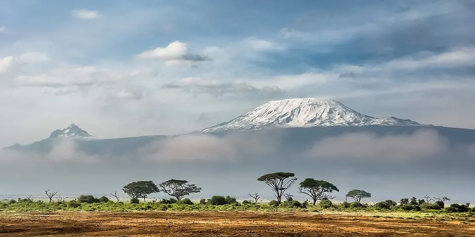

Sub-Saharan Africa
Tanzania on a budget
Climb Kilimanjaro, watch the Serengeti's great herds and wander Zanzibar's Stone Town. Park fees are the main cost, so shared camping safaris from Arusha keep Tanzania affordable.
Photo: Sergey Pesterev, CC BY-SA 4.0, via Wikimedia Commons

Classic route
Arusha, a safari to Ngorongoro and Tarangire, then Zanzibar. 2 weeks.
Before you go
Flights to Zanzibar: Skyscanner · Kiwi.com · Google Flights
Hostels and guesthouses in Zanzibar · Serengeti · Ngorongoro Crater · Kilimanjaro
Tours and tickets: Zanzibar · Serengeti
Mobile data: Tanzania eSIM
Travel insurance: SafetyWing
How much 25 places in Tanzania cost
Daily budgets per person in US dollars: a hostel dorm or simple guesthouse, local food, local transport and the usual entry fees.
-
Zanzibar
Get lost in Stone Town's carved-door alleys and spice markets, then head to the powder-white beaches and turquoise lagoons of the east coast.
Bed $18 · Food $10 · Getting around $4 · Extras $6
Budget tip: Eat at the Forodhani night food market for cheap grilled seafood and Zanzibar pizza. Shared dala-dala minibuses reach the beaches for very little.
$38per day -
Serengeti
Endless golden plains, big cats on the kopjes and the great wildebeest migration thundering across rivers.
Bed $25 · Food $10 · Getting around $25 · Extras $130
Budget tip: Combine it with Ngorongoro on a camping safari from Arusha to save money. Compare group departures to share vehicle costs.
$190per day -
Ngorongoro Crater
Descend into a collapsed volcano packed with lions, elephants, flamingos and rare black rhinos, a wildlife haven within crater walls.
Bed $25 · Food $10 · Getting around $25 · Extras $140
Budget tip: Park fees are high, so keep your visit short. Budget camping safaris that include the crater start in Arusha.
$200per day -
Kilimanjaro
Africa's highest peak, 5,895 m, climbed in 6 to 8 days from rainforest through alpine desert to the glaciers near Uhuru Peak.
Bed $10 · Food $10 · Getting around $5 · Extras $250
Budget tip: Total cost is usually $1,800 or more with fees, guides and porters. Pick a licensed operator that treats porters fairly, and take a longer route for acclimatization.
$275per day -
Arusha
The safari base, with busy markets, coffee farm tours and Mount Meru looming over town, plus easy day hikes nearby.
Bed $12 · Food $7 · Getting around $3 · Extras $3
Budget tip: Compare several safari agencies before booking and read recent reviews. Stay in a hostel while you shop around for group departures.
$25per day -
Moshi
Coffee-growing town at the foot of Kilimanjaro, with clear mountain views at dawn, Chagga village walks and waterfall trips to Materuni.
Bed $12 · Food $7 · Getting around $3 · Extras $4
Budget tip: Compare several Kilimanjaro operators in person. Day trips to Materuni waterfall and coffee farms are cheap by dala dala plus a local guide.
$26per day -
Bagamoyo
Former slave and caravan port with crumbling Arab and German buildings, the Kaole ruins, an art college and quiet dhow-lined beaches.
Bed $12 · Food $7 · Getting around $3 · Extras $5
Budget tip: Daladalas from Dar es Salaam reach Bagamoyo in a couple of hours. One ticket covers the ruins, and the museum is cheap.
$27per day -
Usambara Mountains
Hike between farming villages and dramatic viewpoints in cool, green hills, a refreshing break from safari dust and coastal heat.
Bed $12 · Food $7 · Getting around $4 · Extras $6
Budget tip: Lushoto has community-run guides and cheap lodges. Guided village walks support local projects and cost less than most safari add-ons.
$29per day -
Dar es Salaam
Tanzania's biggest city, with the sprawling Kariakoo market, a fish market on the harbor and ferries over to Zanzibar.
Bed $15 · Food $8 · Getting around $3 · Extras $3
Budget tip: The rapid transit buses are cheap and beat the traffic. Book Zanzibar ferries at the official terminal, not from touts outside.
$29per day -
Kilwa Kisiwani
Wander the ruins of a medieval Swahili trading city, including the Great Mosque and a coral-stone palace, on a quiet island.
Bed $12 · Food $7 · Getting around $6 · Extras $8
Budget tip: Arrange the boat and permit in Kilwa Masoko. Few travellers make it here, so you may have the ruins to yourself.
$33per day -
Nungwi
Northern tip of Zanzibar with white beaches swimmable at all tides, dhow-building yards, sunset boat cruises and a turtle aquarium.
Bed $18 · Food $10 · Getting around $4 · Extras $6
Budget tip: Dala dalas from Stone Town are far cheaper than taxis. Eat at local cafés inland from the beach to avoid resort prices.
$38per day -
Paje
East coast village on Zanzibar with powder sand, shallow lagoons, kitesurfing schools and seaweed farmers working the tidal flats.
Bed $18 · Food $10 · Getting around $4 · Extras $12
Budget tip: Kite lessons are cheaper in multi-day packages. Note that the tide goes out far, so swimming depends on timing; check tide tables.
$44per day -
Pemba Island
Zanzibar's green, untouristy sister island, with clove plantations, mangroves and some of East Africa's best reef diving.
Bed $18 · Food $9 · Getting around $4 · Extras $15
Budget tip: Ferries from Zanzibar are cheaper than flying. Diving is excellent, and local guesthouses cost far less than Zanzibar beach hotels.
$46per day -
Mafia Island
A quiet marine park where you can snorkel with whale sharks from October to February, with healthy reefs and few crowds.
Bed $20 · Food $10 · Getting around $4 · Extras $25
Budget tip: Stay in budget guesthouses in Kilindoni instead of the resorts. Snorkel trips can be shared to cut the cost.
$59per day -
Udzungwa Mountains
Rainforest-clad mountains with endemic red colobus monkeys, the 170 metre Sanje waterfall and steep trails through rich forest.
Bed $15 · Food $8 · Getting around $10 · Extras $30
Budget tip: Ride buses to Mang'ula and book guides at the park gate. The Sanje Waterfall trail is a full day; carry lunch and water.
$63per day -
Lake Eyasi
Seasonal soda lake beneath the Rift escarpment, where Hadzabe hunter-gatherers and Datoga blacksmiths still live traditional lives.
Bed $15 · Food $8 · Getting around $20 · Extras $30
Budget tip: Choose community-run guides who share fees with Hadzabe families. Visits start before dawn; stay overnight at Eyasi campsites to save on transport.
$73per day -
Mikumi National Park
Open floodplain park on the Dar to Iringa highway, easy for short safaris to see elephants, giraffes, zebras and lions.
Bed $20 · Food $10 · Getting around $15 · Extras $40
Budget tip: Reach Mikumi town by public bus and arrange a day safari with lodges there. One day is enough for most visitors and avoids extra park fees.
$85per day -
Lake Natron
Shimmering soda lake in the Rift Valley with flamingo breeding grounds, hot waterfalls and a night climb up the active volcano Ol Doinyo Lengai.
Bed $20 · Food $10 · Getting around $25 · Extras $30
Budget tip: Combine with a Serengeti route to share vehicle costs. Village and conservation fees apply; bring plenty of water, as heat is intense.
$85per day -
Ruaha National Park
Tanzania's biggest park, with big lion prides, elephants along the Great Ruaha River and hardly any other vehicles around.
Bed $25 · Food $10 · Getting around $25 · Extras $40
Budget tip: Join a shared safari from Iringa. Park fees are lower than in the northern parks.
$100per day -
Tarangire
Ancient baobabs and some of Tanzania's biggest elephant herds crowd the Tarangire River, especially in the dry season.
Bed $25 · Food $10 · Getting around $25 · Extras $60
Budget tip: The cheapest park to add to a short safari. Day trips from Arusha are possible if you're short on time and money.
$120per day -
Lake Manyara
Compact park below the Rift Valley escarpment with groundwater forest, flamingos, baboon troops and lions known for resting in trees.
Bed $25 · Food $10 · Getting around $25 · Extras $60
Budget tip: Combine Manyara with Ngorongoro and Tarangire in one shared safari, and stay in Mto wa Mbu village for cheaper lodging.
$120per day -
Mount Meru
Steep volcanic cone inside Arusha National Park, a three to four day climb past giraffes and buffalo to a crater rim summit.
Bed $10 · Food $10 · Getting around $5 · Extras $100
Budget tip: A good acclimatisation climb before Kilimanjaro. Park fees and an armed ranger are mandatory; join other climbers to share ranger and guide costs.
$125per day -
Nyerere National Park
Huge wilderness formerly called Selous, offering boat safaris on the Rufiji River, walking safaris, wild dogs and big herds of elephant.
Bed $25 · Food $10 · Getting around $20 · Extras $70
Budget tip: The train from Dar es Salaam to Kisaki or Matambwe is cheaper than flights. Camps outside the park gates cost far less than lodges inside.
$125per day -
Gombe Stream
Trek through steep forest to watch wild chimpanzees where Jane Goodall did her research, beside the shores of Lake Tanganyika.
Bed $20 · Food $10 · Getting around $10 · Extras $100
Budget tip: Boats from Kigoma take an hour or two. Park fees are high, so stay just one night.
$140per day -
Mahale Mountains
Forested peaks on Lake Tanganyika's shore where chimpanzee troops are tracked on foot, reached only by boat or charter plane.
Bed $30 · Food $12 · Getting around $30 · Extras $100
Budget tip: Mahale is expensive and remote; the MV Liemba ferry and public boats from Kigoma are cheapest. Budget for chimpanzee permits and a long trip.
$172per day
Know before you go
Tanzania on a budget: the basics
Currency
$1 = 2,648 TZS
Tanzanian shilling
| Dollars to TZS | TZS to dollars | ||
|---|---|---|---|
| $1 | 2,648 TZS | 1,000 TZS | $0.378 |
| $5 | 13,238 TZS | 5,000 TZS | $1.89 |
| $10 | 26,476 TZS | 10,000 TZS | $3.78 |
| $20 | 52,953 TZS | 50,000 TZS | $18.88 |
| $50 | 132,382 TZS | 100,000 TZS | $37.77 |
| $100 | 264,763 TZS | 500,000 TZS | $189 |
A typical day here (about $190) is roughly 500,000 TZS.
Mid-market rate on 2026-10-05. Cash machines and exchange desks pay a little less.
Getting around
Long-distance buses link most towns, and it pays to book with a well-known company a day ahead. Dala-dalas, shared minibuses, cover short routes, and Uber and Bolt work in Dar es Salaam. Fast ferries run between Dar es Salaam and Zanzibar, and safaris are best booked through an Arusha operator.
Where to sleep
Arusha has hostels and cheap guesthouses, and budget safaris use public campsites in the parks. Stone Town and Zanzibar beach towns have guesthouses that fill in high season.
What to eat
- Chipsi mayai: french fry omelet, sold at street stalls
- Mishkaki: grilled skewers of marinated beef or goat
- Urojo: tangy Zanzibar soup with fritters and potatoes
- Zanzibar pizza: stuffed and griddled dough from Forodhani Gardens
Money
US dollars are widely used for safaris and tours, but older or worn notes are often refused. National park fees are generally paid by card, and shillings in cash cover daily costs, with ATMs in cities and tips expected on safari.
Phone data
Vodacom and Airtel SIMs are easy to get but need passport and fingerprint registration, and coverage is good in towns and on Zanzibar.
Heads up
Zanzibar is largely Muslim, so cover shoulders and knees away from the beach.
Tanzania travel: quick answers
How much does a day in Tanzania cost on a budget?
About $190 a day for one person, from $25 in Arusha to $275 in Kilimanjaro. That covers a hostel dorm or simple guesthouse, local food, local transport and the usual entry fees, so a week runs about $1,330 before flights.
When is the best time to visit Tanzania?
January to February and June to October is the best time, with the most reliable weather for getting around.
What is the cheapest place to visit in Tanzania?
Arusha, at about $25 a day. The safari base, with busy markets, coffee farm tours and Mount Meru looming over town, plus easy day hikes nearby.
How long do you need in Tanzania?
Arusha, a safari to Ngorongoro and Tarangire, then Zanzibar. 2 weeks.
How much is $1 in Tanzania?
One US dollar is about 2,648 Tanzanian shilling (TZS), going by the mid-market rate on 2026-10-05. So $20 is roughly 52,953 TZS, and a typical budget day of $190 comes to about 500,000 TZS.
How do you get around Tanzania cheaply?
Long-distance buses link most towns, and it pays to book with a well-known company a day ahead. Dala-dalas, shared minibuses, cover short routes, and Uber and Bolt work in Dar es Salaam. Fast ferries run between Dar es Salaam and Zanzibar, and safaris are best booked through an Arusha operator.
What food should you try in Tanzania?
Chipsi mayai, french fry omelet, sold at street stalls. Mishkaki, grilled skewers of marinated beef or goat. Urojo, tangy Zanzibar soup with fritters and potatoes. Zanzibar pizza, stuffed and griddled dough from Forodhani Gardens.
Planning around the seasons? See where to go in January, or compare the cheapest countries nearby.
Itineraries through Tanzania
- Kenya, Tanzania and Zanzibar 19 days · $2,811
Similar budgets nearby
- Seychelles $106/day
- Djibouti $100/day
- Rwanda $88/day
- Zambia $85/day